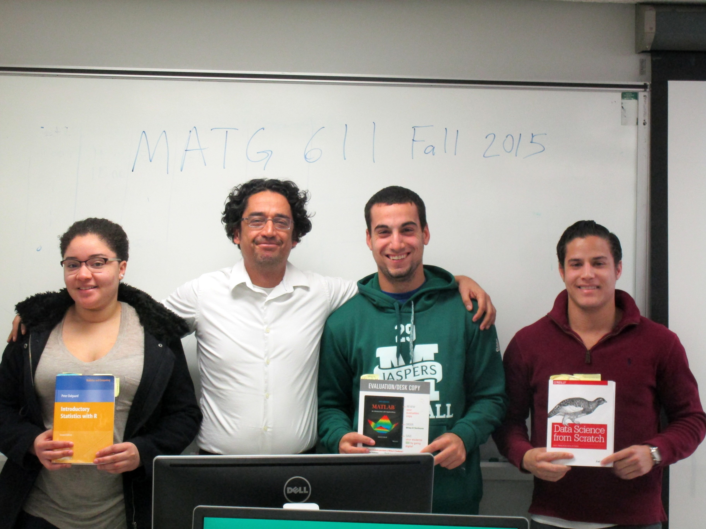
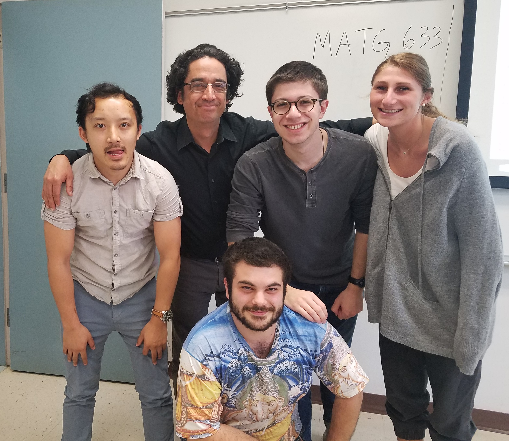
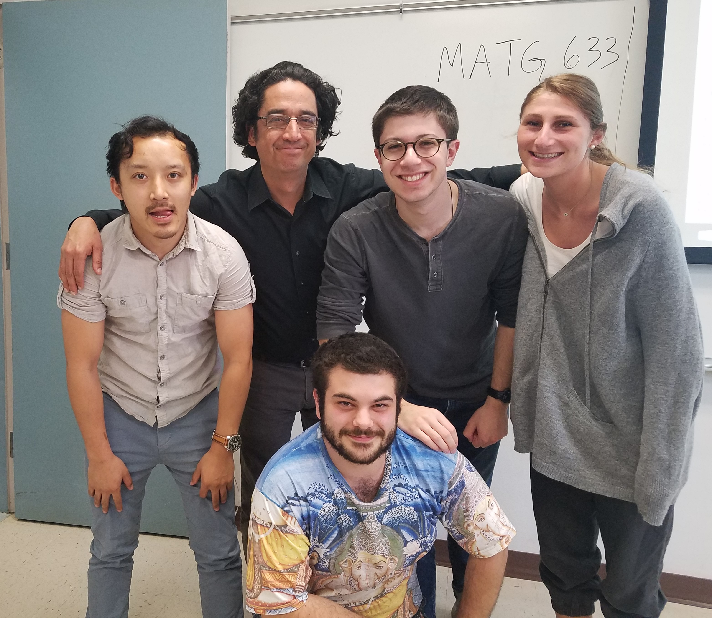

Teaching Overview
I feel that the best path for learning is through enjoyment. I strive to have my students see the joy in math. In many of my classes, students work on projects exploring something related to our class which interests them. A major emphasis in my teaching is getting students involved in research. I am also interested in problem solving, industrial projects, service learning and social justice in mathematics education.
Teaching Information for Spring 2022:
Courses:MATG 557: Machine Learning
Office Hours:
Monday 5:50-6:20 am, Thursday 5:50-6:20 pm, or by appointment.
Previous Courses Taught at Manhattan College:
MATH 158: Introduction to Mathematical ComputationMATH 186: Calculus II
MATH 230: Elementary Statistics
MATH 285: Calculus III
MATH 331: Probability
MATH 336: Applied Statistics
MATG 511: Computational Methods for Analytics
MATG 630: Probability and Statistics for Analytics
MATG 632: Statistical Inference
MATG 633: Advanced Statistical Inference
MATG 635: Probabilistic Methods
MATG 639: Statistical Learning

MATG 611 during fall 2015

MATG 633 during spring 2017
MATG 611 during fall 2015

MATG 633 during spring 2017